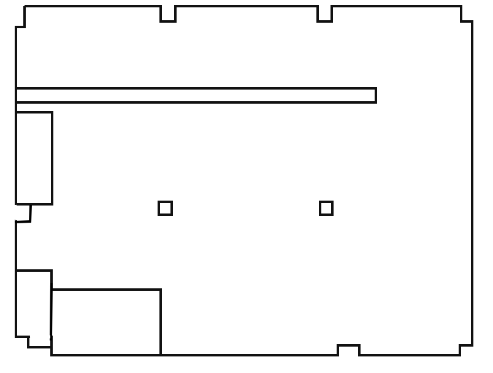

實驗室設備即時平面圖
今日設備使用狀況：點選設備方塊可篩選下方甘特圖，點擊空白處可解除篩選。
空閒可預約
驗證中
維修中
PQE 預約
神準預約
外部預約
校正中

設備使用狀況
從今天起顯示一個月，直向捲動查看設備、橫向捲動查看日期。
已篩選設備：
預約清單
列出全部專案，分為未結案與已結案，每頁顯示 10 個專案。
| 設備 | 時間 | 申請人 | 專案 / 用途 | 狀態 | 操作 |
|---|